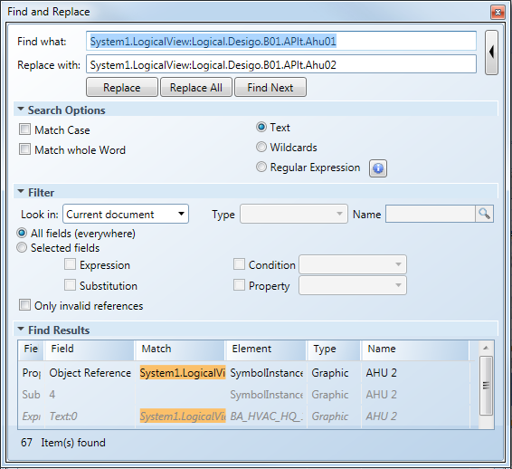
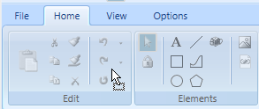
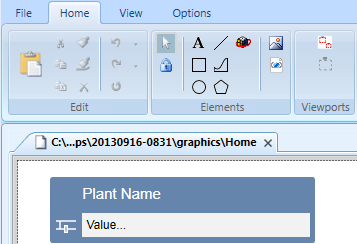

Copying a Graphics Page
The project must be considered as a whole to efficiently engineer the graphics. You may, for example, decide to start with the largest plant, rather than the first ventilator in the building. This can then be copied and modified as a template for all other ventilation plants. The graphic references for a copied graphics page can then be referenced using:
- Find and Replace
- Reassign individual references
- Open the graphics page to be copied.
- Click Save As
 .
. - Select the appropriate graphic folder and in the Name field, enter a new file name.
- Click OK.
- The graphics page is copied and saved under a new name.
Modifying Object References using Find and Replace
- You want to delete unneeded graphic objects for the new ventilation plant.
- In the View tab select Find and Replace.
- The Find and Replace dialog box opens.
- In System Browser, select the corresponding hierarchy in the object tree, for example, Logical > [Network name] \...\ [Plant].
- Drag the object from the existing plant to the Find what text field.
For example, System1.LogicalView:Logical.Desigo.B01.APlt.Ahu01. - Delete the ; character at the end of the object reference.
- The found object references are displayed in the Find Result dialog box.
- Drag the object from the new plant to the Replace with field.
For example, System1.LogicalView:Logical.Desigo.B01.APlt.Ahu02. - Apply the default settings for the Find what and Replace with fields.

- Click Replace All.
- The object references are replaced. No further object references are displayed in the Find Results dialog box.
- Click Save
 .
. - Continue graphic engineering for this graphics page by:
- Changing the plant name (this is normally the title of the text in the center of the page)
- Modifying existing graphic links to other graphics pages
- Adding missing objects
- Modifying object reference for the outdoor sensor. Reason: The outdoor sensor is generally not in the same structure as the plant.
Individually Modifying Object References
This procedure is particularly helpful if an existing graphics page requires only a few data points from another object hierarchy. The outdoor sensor typically exists only once in a project, but must be displayed on various graphics pages.
- The outdoor sensor exists on the graphics page with an incorrect object reference.
- In System Browser, select Logical view.
- Select Logical > [Network name] \...\ [Plant] > [TOa (outdoor sensor)].
- Drag the object reference to the symbol or in the Symbol field Properties > Symbol Instance > Object Reference.
Copying Across a Project
Existing graphics for a project are copied to a new one and modified.
- The Graphics Editor is opened.
- No graphics page is open.
- Open Windows Explorer and select Source project > Graphics.
- Select the graphics page to be copied (.ccg).
- Drag the page to Start > Edit.

- The page is copied and displayed.

- Click Save As .
- Select the appropriate graphic folder and in the Name field, enter a new file name.
- Click OK.
- The graphics page is copied and saved under a new name.
- Edit the copied graphic and adapt the object references using Search and replace or Individually.

NOTE:
Incorrect object references are displayed in Test- or Online mode using #ENG.